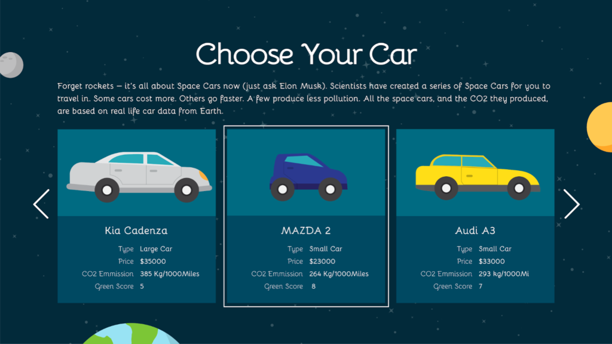
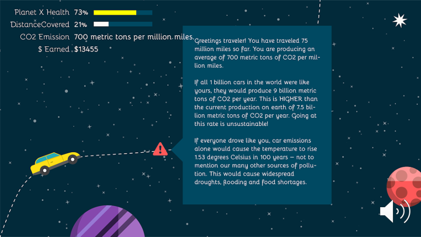
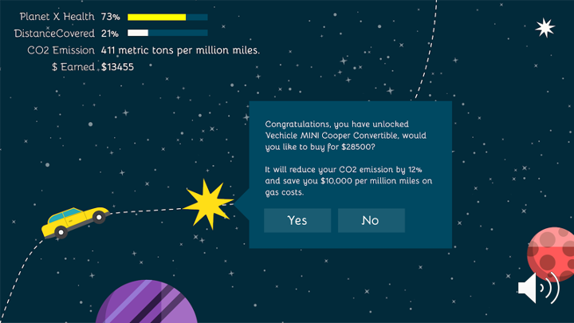
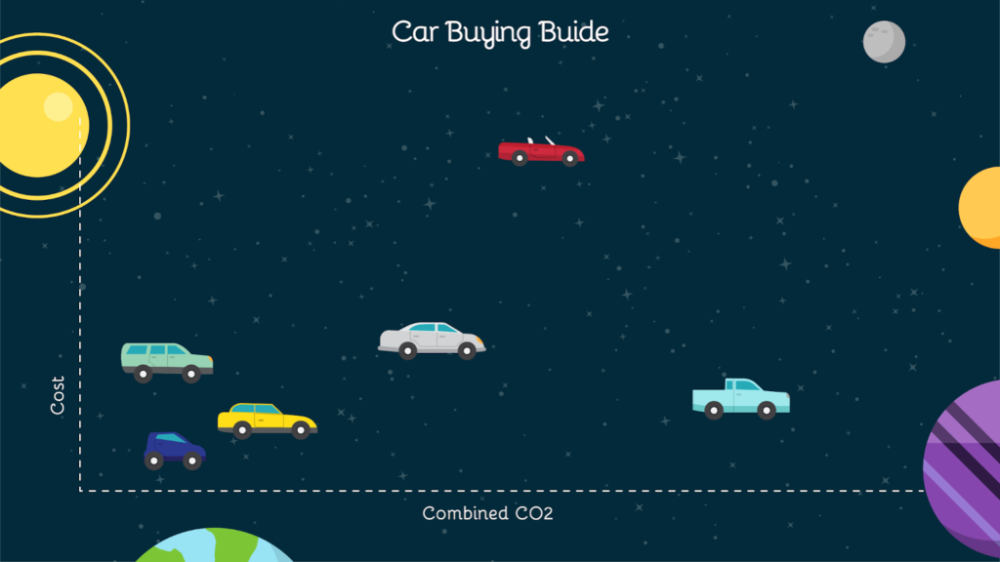

These salads are a data sculpture represent the diversity of flower blooms in NYC. The diversity of vegetables in each salad represents the diversity of flowers in the dataset, with the amount of each corresponding to the proportion of each flower.
DATA
The original dataset (link here) was 2015 data from the NYC Tree Census from the NYC Parks Department. https://datastudio2020.datatherapy.org/2020/03/05/the-city-in-bloom/ The data gave various types of trees producing flowers of different colors across different seasons.
AUDIENCE
I thought about targeting a local community meeting where neighborhood tree and flower planting would be discussed. I positioned myself as a non-profit or city department educating and advocating for greater plant diversity within NYC neighborhoods. Therefore, I wanted a conceptually simple data sculpture that was interactive and could spark discussion.
I decided to create a salad with the idea that it would double as food for a town meeting and an ice breaking discussion topic. Some attendees could be served the less colorful salad and others the more colorful one, and it could be revealed once the meeting started that these were data sculptures. It could help ease attendees into the meeting subject while making data more digestible.
CONCEPT
I created three salads representing three neighborhoods in NYC with noticeably differing flower diversities.
The idea of using leaves and other plants in a salad is meant to continue the narrative of natural diversity in this story. Also, it reinforces the idea that the best salads have a diverse mix of plants.
I mapped vegetable type onto flower color:
Dark Pink — Purple Cabbage
Light Pink — Radish
Red — Red Cherry Tomato
Light Yellow — Yellow Cherry Tomato
Yellow Green — Romaine Lettuce)
Green — Spinach
White — Mushroom
The resulting sculpture emphasizes the importance of fostering diverse neighborhood ecologies — with the idea that the colorful salad is most appealing to look at just like how a more ecologically colorful neighborhood is beautiful to live in (though I realize both are somewhat subjective).
CHARTS
Breezy Point chart and saladFloral Park chart and saladCollege Point chart and salad
REFLECTIONS
Making a data sculpture was a fun exercise. In doing this sculpture, I felt limited on resources and data. I would have liked to have more detailed data and used that to make larger, more colorful salads. I think having a bigger plate would have had more aesthetic impact. I was also not sure about how I arranged the salad — I mixed the vegetables but I also considered a pie chart formation on the plate.
In this paper,a study of how people perceive physical data visualizations reveals that (1) people are quite good at interpreting 3D bars based on length (2) people are not very good at interpreting spherical volumes, though slightly better with spherical surface areas.
Some interesting takeaways include the context/history of design psychology and a mathematical model for perception, which I summarize below.
Context
The paper situates itself within a field of design psychology that has historically tried to understand how to effectively communicate information through visual presentation. Past researchers in this field helped define best-use principles for 2D data charts and for mapping — such as developing the idea that position of a dot might be better at communicating quantitative information than size of a dot in a chart (see work of Cleveland and McGill).
However, little research exists for 3D data physicalizations. Additionally, past studies have shown significant variation in volume perception among people.
Application
The authors note that data physicalizations are increasing with the increased access to fabrication technology, increased usage of data and other factors. Past research has shown data physicalizations can aid communication by increasing engagement and engaging non-visual senses. Knowing which variables people have trouble perceiving accurately can help designers make more informed decisions, the authors say, but note this does not mean those variables should necessarily be always avoided.
Examples of actual usages of spheres and bars for data representation.
Experiment
The study asked participants to see a series of shapes meant to represent certain quantities, and then to judge their relative sizes.
The experiment’s user interface allowed participants to deliver their response via a slider or via entering a number. Participants were able to see the shapes physically and via an image.
Experiment setup.
Math Model
The authors include a mathematical model for quantitizing perception: Steven’s power law, which relates perceived quantity (P) to a true quantity (S) through two factors a and b which are to be experimentally determined.
P=bS^(a)
However, they note that the disadvantage of this model, which represents perception through a single variable, is that perception can vary widely between people.
Results
Bars: People perceived bars quite accurately, in line with previous studies for 2D bars. Perception followed a more linear response curve than for spheres— meaning that as the actual size (S) went up, perception (P) went up correspondingly.
Spheres: People are likely to perceive data incorrectly if it is represented in terms of sphere volume, with a tendency to underestimate (19% error rate). However, if data is encoded in terms of sphere surface area, accuracy improves (9% error rate).
For spheres, perception showed a slightly more exponential curve, meaning that as actual size (S) went up, perception (P) went up as well but more slowly at first.
It is also notable that in interviews participants generally expressed lower confidence in their sphere estimates, some apologizing to say they were “not very good at this”.
Variation: The authors found little individual variation in estimates, suggesting these results are useful as representation of common perception inaccuracies.
Questions to Think About
What other aspects of data physicalization perception could benefit from this type of psychological research?
Based on these findings, what might be some direct actions that educators or data visualizers can take to make their work more effective?
What might be some limitations of this type of study? And how might this type of study be augmented?
Some personal thoughts
In my opinion, it was quite interesting to better understand the history of design psychology research, and how it may have contributed to the more standardized approaches to mapping and 2D charts we see in the professional setting today. However, it can also be argued that this type of research historically contributed to standardizing 2D visualizations in a way that scholars advocating for more creativity within data representation or mapping are pushing against today (whether authors intended to or not).
On a more conceptual level, I felt that treating perception as purely a scientific, and mathematical, variable may ignore the more complex way that people interact with objects and aesthetics. The researchers asked participants in the study to try to quantify their perceptions, but I don’t think this act of quantifying is what people naturally do when seeing a set of objects. When I see a data sculpture, I don’t actively try to estimate the sizes based on perception — and I’m not sure my subconscious does either. I would be interested to see more work that might delve into what narratives people take away from data sculptures whether or not they involve a perception of quantities.
I also feel that perception cannot be treated as an unchanging biological variable, but as something that evolves temporally and may vary spatially. Art historians have suggested that society’s ability to perceive depth may have been affected by developments in painting, and scientist have found differences in perception across different cultures. While reading this paper, I wondered how proliferations in 2D visualizations might have affected the historically accepted findings from design psychology, and how other developments may similarly affect 3D physicalizations.
Finally, I noted that the authors presented fairly small objects and wondered how these size perceptions might vary at larger scales — scales comparable to the human body for example.
We use the Environmental Protection Agency’s Fuel Economy Data which shows how fuel efficient cars can produce drastically lower CO2 emissions, while also saving the driver money due to reduced gas costs. We wanted to tell this story because changing consumer car purchasing decisions is one of the key challenges in reducing overall vehicular pollution. We created a web-game, Cars in Space!, to provide a fun and accessible educational experience on why and how to choose greener cars.
BACKGROUND
Despite the creation of more energy efficient car models, car emissions in the US keep increasing! This is happening partly because Americans haven’t changing their car buying habits and continue to choose bigger, less efficient vehicles over the smaller models [1]. We are creating the web-based game Cars in Space! to educate consumers on the energy-efficient car options that exist and why they are worth purchasing.
AUDIENCE
Our target audience is young car buyers aged 18 – 40. This might include a college student buying a first car, a young professional buying a car for work or a parent buying a family car. We are interested in young buyers because we believe we can impact their car buying decisions over a lifetime by educating them early and because young people have the most cause to be invested in a cleaner environment.
PLACEMENT
The web game can be featured or advertised on car sites that a buyer might visit such as Consumer Guide, the Kelley Blue Book, or AutoTrader. It can also be advertised on Instagram and other sites millennials browse. It will be advertised as a fun break or gentle introduction for those researching car purchases — with the goal that it will end up positively influencing their decisions.
CONCEPT
We wanted to create an eye-catching racing game using actual car data. Players will get to choose various cars to drive as they try to go from Earth to Planet X without releasing too much pollution (see Walkthrough for details). We set the game in space as an exciting and unexpected move. The space setting also allows us to deal with data at large scales to demonstrate the long-term impact of fuel-efficient cars.
GAME WALKTHROUGH
Game Title Card: This is the title design of the game.
Game Title Card
Game Introduction: This part of the game teaches the player how to play.
This sets up the premise of the game — players try to go from the polluted Earth to the possibly hospitable Planet X.Players choose from cars based on real car data.
Game Data: The next two introductory screens explain how the game data works in terms of Money and Pollution.
Earning Money: You start with a base amount of money and earn more money per mile. Additionally, more energy efficient cars earn more money per mile because of the savings on gas costs. These savings amounts are based on real data. A ticker in the upper corner will show you how much you have earned. See Behind-the-Scenes data for an in-depth explanation of how money is calculated.
Pollution: You release CO2 per mile that you drive. Amounts are based on real data.
Players earn money, which they can use to buy more cars, as they drive. Cars release pollution as they drive. Players want to eventually find a car that won’t pollute too much, lest Planet X eventually become over-polluted like Earth as well.Gameplay still. Note the corner tickers for Planet X Health, Distance, Co2 Emissions and Money Earned.
Pop-up Pollution Alerts
Pop-up alerts periodically explain to you whether your emissions are lower or higher than ideal. The explainers also describe context — for example, what would it be like if everyone drove this car?
Pollution Alert #1Pollution Alert #2
New Cars
Players unlock new types of cars to buy as they play. This prevents the player from being overwhelmed by too many choices upfront and allows them to learn gradually while playing. This also keeps the game exciting.
New Car Option
Fun
Gameplay includes fun and twisty curves to travel through, pretty planets to see, and various bonuses to go through like stars, asteroids and aliens.
Gameplay Still
Takeaway
At the end of the game, players can view online or save a PDF of the game’s an energy efficient car guide with them that includes all the cars they played with and even those they didn’t! The full guide includes 44 cars, one from each model in the EPA’s dataset. The guide will allow players to contextualize and summarize their learnings, and also be useful for car buying decisions. In the digital guide, players will be able to mouse over images to see fuller data. In the print guide, the data will be printed alongside the images.

Game Logic
Note that since this is a simple web game, there are some fantastical flights of fancy that we take! Obviously most of this is not even barely possible. However, since all of our data is based on real life car data, we believe a user will come away with accurate notions about what they could potentially gain from buying a greener car (even if the metaphor was in space)!
Behind-the-Scenes Game Data (Feel free to skip this section)
This part explains how the game’s calculations work, to demonstrate that we did all the detailed math. But the player does NOT see all these detailed calculations (too distracting!).
How Travel Works — The car will travel 6 billion miles to Planet X (Pluto is 4.67 billion miles away)[2]. Cars travel ~400 million miles per minute and the game takes about 15 minutes to play in full unless the player runs out of money or over-pollutes and dies early.
How Cars Work — There are 44 possible cars the player can buy in the game — one sample from every single model in the EPA dataset. Cars become exhausted and need to be replaced every 15-45 seconds. As the player plays, more cars will become unlocked and available for purchase.
How CO2 Works — Cars produce CO2 based on their EPA CO2 Score which gives grams of CO2 production per mile. Scores in our dataset range from 200 to 700 grams per mile.
How Money Works — Players earn money as they travel further (the money ticker goes up simply as the game progresses). The money ticker will go up faster for more fuel-efficient cars because they reduce the cost of gas.
Specifically: Cars in our dataset have Highway MPG ranging from 15 to 116. Money goes up at a base rate of ($1 per million miles) for cars with Highway MPG 30 or below (because we want to compare more fuel efficient cars to an average car, not the least efficient clunkers — we feel this comparison is more applicable to the behavior change we want to drive):
Money goes up faster for more efficient cars using this savings calculation:
Gas: $1.5/gallon
Total Money = ($1) * (Miles Traveled) / (1,000,000) + (Money from gas savings)
(Money from gas savings) = (Miles Traveled) * (Savings Per Mile)
(Savings Per Mile) = (Cost per mile at Highway MPG 30 – Cost per mile at Highway MPG X)
Players earn bonus $ from driving through asteroids, shooting stars, aliens and other fun bonuses. Players will earn approx. $10,000-20,000 from these bonuses, whose appearance is determined randomly.
Driving the most inefficient car all the way, a player will earn ($6000 + bonuses) over the course of the game. Driving the most efficient car all the way, a player would earn $222 billion over the course of the game. However, it is most likely that a player would earn ~$1-2 billion over the course of the game.
A player would need at most $2 million to buy one of each of the cars in our game. Cars also become exhausted every 15-45 seconds and need to be replaced throughout the game. Accumulating lots of extra money is just for fun and oxytocin release — and to demonstrate the big long-term value of fuel-efficient vehicles.
Background Research
The following data points were use to calculate Pollution Alerts and other game data:
American drivers put 3.22 trillion miles on the nations roads last year, up by 2.8 percent from 2015.[3]
Researchers saw an average temperature increase of 1.7 ±0.4°C per trillion tonnes of carbon in CO2 emissions (TtC).[4]
According to data from the U.S. Department of Transportation, the average American driver puts in 13,474 miles behind the wheel each year. [5]
by Ife Ademolu-Odeneye, Cynthia Hua, Gaurav Pateker
The data we used shows that Cyclone Fani moved through North India causing significant damage to communities and ecologies. We wanted to tell this story in order to demonstrate the link between scientific data (on cyclones) and social data (on the damage they cause). We created an interactive, educational display for a science museum using data on the location and damage caused by a cyclone.
Data
Our initial data was the Tropical Cyclone Dataset from The National Oceanic and Atmospheric Administration, which gave the location and wind speed/pressure data for many cyclones. We ended up narrowing into use data on one specific cyclone, 2019’s Cyclone Fani, with data on location and windspeed.
Initial Data Exploration
This section is not part of our final sketch — it just explains our process, feel free to skip. We explored the data initially by mapping it several ways — by year (A), for a specific basin (B), and by wind speed/pressure (C). We observed that:
(A) A global map seemed too zoomed out — the localized, social impact of the cyclone’s damage seemed less visible. Therefore, we decided to focus on one specific cyclone — allowing us to zoom in and give a concise narrative instead of getting lost in the large scale of the data.
(B) Mapping a cyclone’s path alone merely gave us a series of lines that did not immediately tell a story. Therefore, we decided to include additional data from outside the NOAA dataset — so that our narrative could go beyond wind speed and air pressure.
(C) Wind speed and pressure might be more informative if contextualized alongside the cyclone’s damage. Therefore, we decided to demonstrat the social impact of cyclones — the way it caused damage to communities, infrastructures, and ecologies — in order to explain why tracking cyclones is important.
Data Sketch Summary
We decided to create an interactive art display for a science museum:
Audience — Families visiting a science museum looking for an engaging and educational representation of cyclones. The display should aesthetically draw in visitors (selective use of bright colors, not too much clutter) and allow for interactive learning.
Context — We imagine this map will be part of a larger exhibit on cyclones/weather. This map ties in scientific data with image data showing social impact.
We focus on Cyclone Fani — a spring 2019 tropical cyclone hitting North India that was the strongest cyclone to strike India in the last two decades, causing severe damage to areas in its path.
Set-up
We created a table-mounted display that is:
Shows the path of Cyclone Fani over a larger background map of North India. Sits next to a wall map showing the global context.
Touch-interactive — Allows the user to select various points along the cyclone path to learn more.
Allows multiple people to interact with it simultaneously as would be the case in a museum setting
Table-top display — to allow users of various heights (children and adults) to interact with all aspects of the display
Display
Our map display shows the path of Cyclone Fani over a larger background map of North India:
The background is kept simple and two-toned so as not to distract the user from the main focus — the cyclone path. We removed map depictions of roads, rivers, mountains, labels/names or other detail irrelevant to our narrative. The path is the most noticeable bright color.
The path has clickable points. When a user clicks on a point, more details about the cyclone’s impact at that point is revealed.
When a user clicks on a point, interactive slider images pop up showing damage before and after. The user can also click LOOK CLOSER to learn more, EXPLAIN to read facts about the area/cyclone (including data on top wind speeds and date of cyclone activity) or ZOOM OUT to go back.
Main Display (after a user clicks on a point)
LOOK CLOSER: An interactive feature allows users to find changes before and after by circling them via the touchscreen. They can also click to see what other users circled. This makes the user pay more detailed attention to noticing what has changed themselves.
Health data — steps taken, miles walked, flights of stairs taken
Map data — GPS location
Photos — photo of several flowers, a few dogs, screenshots of a few articles I read
Browser — Read the news (NYT, Slate, Nymag, New Yorker), browsed Twitter newsfeeds, liked a number of Tweets, browsed Instagram (mostly dog videos)
Texts — text conversations I had with a few friends where I sent them the screenshots I took from a few news articles
Messaging apps — Sent messages on FB Messenger, WeChat, Signal
Overall — Roaming data, connected to home wifi and used 4G, battery life data
Laptop
Microsoft Word — Wrote a few lines of a poem
Browser — purchased a pillow on Amazon, looked up a recipe for bread pudding, watched YouTube videos (watched many dog videos, some videos about babies, some comedy videos, a few celebrity interviews), read more news (NYT, BBC, Slate), browsed more Twitter, checked email on Gmail again
iPad
Watched a few episodes of show on Hulu
Transportation
Swiped bus pass twice
Services
Swiped in at the YMCA gym
Entered library but did not swipe library card (but not sure if presence was recorded in some other way?)
Purchasing
Swiped QR code at Whole Foods for Amazon membership, pretty sure all my motions are recorded the moment I step into a Whole Foods
Smart fridge — I don’t think our fridge has Internet connectivity but it does record things such as the amount of ice left and when the filter needs to be replaced